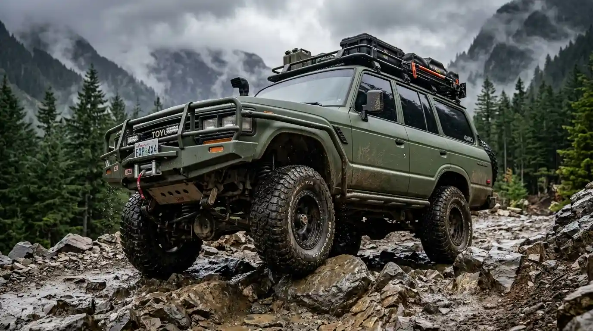

Heavy 4x4 platformChassis & powertrain
Armada andalan berbasis Toyota Land Cruiser, Land Rover Defender, dan Suzuki Jimny yang dirombak untuk ketahanan non-stop.
Ground clearance295 mm
TraksiDiff lock depan & belakang
Kedalaman airHingga 800 mm (snorkel)
Uji kir: bulananRoll-cage di dalam kabin